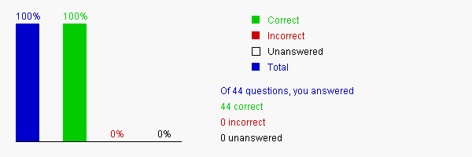

Chapter 42 Servlets

Please send suggestions and errata to Dr. Liang at y.daniel.liang@gmail.com. Indicate which book and edition you are using. Thanks!
Section 42.2 HTML and Common Gateway Interface
42.1 Which of the following statements are true?
A. Static information is preprocessed and stored in a file. The information in the files can be updated, but at any given time every request for the same document returns exactly the same result.
B. Dynamic information is not stored in a file. It is generated dynamically and sent directly to the client.
C. Common GateWay Interface provides a standard framework for Web servers to interact with external programs, known as CGI programs.
D. CGI programs are all written in Perl.
Your answer is correct
42.2 In a URL query string, the ______ symbol separates the program from the parameters.
A. ?
B. =
C. &
D. +
E. -
Your answer is correct
42.3 In a URL query string, the parameter name and value are associated using the ____ symbol.
A. ?
B. =
C. &
D. +
E. -
Your answer is correct
42.4 In a URL query string, parameter pairs are separated using the ___ symbol.
A. ?
B. =
C. &
D. +
E. -
Your answer is correct
42.5 In a URL query string, the ____ symbol denotes a space character.
A. ?
B. =
C. &
D. +
E. -
Your answer is correct
42.6 The GET and POST methods are specified in _________.
A. a CGI program
B. a Java program
C. an HTML form
D. a URL string
Your answer is correct
42.7 Which of the following statements are true?
A. When issuing a request from an HTML form, either a GET method or a POST method can be used. The form explicitly specifies which of the two is used.
B. If the GET method is used, the data in the form are appended to the request string as if they were submitted using a URL.
C. If the POST method is used, the data in the form are packaged as part of the request file. The server program obtains the data by reading the file.
D. The POST method always triggers the execution of the corresponding CGI program. The GET method may not cause the CGI program to be executed if the previous same request is cached in the Web browser.
Your answer is correct
42.8 The _______ method ensures that a new Web page is generated.
A. GET
B. POST
C. DELETE
D. UPDATE
Your answer is correct
42.9 If your request is not time-sensitive, such as finding the address of a student in the database, use the __________ method to speed up the performance.
A. GET
B. POST
C. DELETE
D. UPDATE
Your answer is correct
42.10 Java servlets are better than the CGI programs because ______________.
A. Servlets are written in Java while CGI programs are written in Perl or other languages. you can develop servlets with the support of Java API for accessing databases and network resources.
B. Servlets are dynamically executed.
C. For each CGI execution, the Web browser spawns a new process to execute a CGI program. However, all servlets are executed within the servlet engine. Each execution of a servlet is handled as a thread by the servlet engine. So, servlets runs faster than CGI programs.
D. Servlet programs can run on any Web server.
Your answer is correct
42.11 Apache Tomcat is a ________.
A. Servlet
B. Java program
C. Web server
D. Web server that is capable of running Java programs.
Your answer is correct
42.12 A servlet is an instance of __________.
A. the Object class
B. the Applet class
C. the HttpServlet class
D. the HTTPServlet class
Your answer is correct
42.13 To compile a Java servlet program, the ___________ file must be in the classpath.
A. TomcatRootDir\servlet.jar
B. TomcatRootDir\common\servlet.jar
C. TomcatRootDir\common\lib\servlet.jar
D. TomcatRootDir\common\bin\lib\servlet.jar
Your answer is correct
42.14 If your servlet class file does not have a package statement, the servlet .class file must be placed in ________ by default.
A. the same directory with the .java file.
B. TomcatRootDir\webapps\WEB-INF\classes
C. TomcatRootDir\webapps\examples\WEB-INF
D. TomcatRootDir\webapps\examples\WEB-INF\classes
Your answer is correct
42.15 If your servlet class file has a package statement package chapter33, the servlet .class file must be placed in ________ by default.
A. the same directory with the .java file.
B. TomcatRootDir\webapps\WEB-INF\classes
C. TomcatRootDir\webapps\examples\WEB-INF\classes
D. TomcatRootDir\webapps\examples\WEB-INF\classes\chapter33
Your answer is correct
42.16 Before starting Tomcat, you have to set the environment variable JAVA_HOME to _______
A. JDKHomeDir
B. JDKHomeDir/bin
C. JDKHomeDir/bin/java
D. JDKHomeDir/java
Your answer is correct
42.17 To start the Tomcat servlet engine, use the command __________ from the TomcatRootDir\bin directory.
A. java TomcatServlet
B. start Tomcat
C. start
D. startup
Your answer is correct
42.18 By default, Tomcat runs on port ___________.
A. 8080
B. 80
C. 1080
D. 8888
Your answer is correct
42.19 Suppose the servlet class named Test does not have the package statement, by default, you use ________ to invoke it.
A. http://localhost:8080/examples/servlet/Test
B. http://localhost:8080/examples/servlet/test
C. http://localhost:8080/Test
D. http://localhost:8080/test
Your answer is correct
42.20 The _________ interface defines the methods that all servlets must implement.
A. javax.servlet.Servlet
B. HttpServlet
C. ServletRequest
D. ServletResponse
Your answer is correct
42.21 The _______ method is called when the servlet is first created, and is not called again as long as the servlet is not destroyed.
A. init
B. service
C. destroy
D. getServletInfo
Your answer is correct
42.22 The _________ class defines a servlet for the HTTP protocol.
A. javax.servlet.http.HttpServlet
B. Servlet
C. HttpServletRequest
D. HttpServletResponse
Your answer is correct
42.23 _________ is a subinterface of ServletRequest.
A. HttpServletRequest
B. HttpServletResponse
C. HttpServlet
D. Servlet
Your answer is correct
42.24 Every doXxx method in the HttpServlet class has a parameter of the __________ type, which is an object that contains HTTP request information, including parameter name and values, attributes, and an input stream.
A. HttpServletRequest
B. HttpServletResponse
C. HttpSession
D. Cookie
Your answer is correct
42.25 Every doXxx method in the HttpServlet class has a parameter of the HttpServletResponse type, which is an object that assists a servlet in sending a response to the client.
A. HttpServletRequest
B. HttpServletResponse
C. HttpSession
D. Cookie
Your answer is correct
42.26 Suppose the two parameters in the doGet or doPost method are request and response. To specify HTML content type sent to the client, invoke ___________.
A. response.setContentType("text/html")
B. request.setContentType("text/html")
C. response.setContentType("html")
D. request.setContentType("html")
Your answer is correct
42.27 Suppose the two parameters in the doGet or doPost method are request and response. To send output to a client, create a PrintWriter using _____________.
A. response.getWriter()
B. response.getPrintWriter()
C. response.writer()
D. response.getWrite()
Your answer is correct
42.28 Which of the following creates a text field in an HTML form?
A. <input type="text" name="mi" size="1">
B. <input type="radio" name="gender" value="M" checked>
C. Major <elect name="major" size="1"> <option value="CS">Computer Science<option value="Math">Mathematics<option>English<option>Chinese</select>
D. <input type="checkbox" name="tennis"> Tennis
E. <textarea name="remarks" rows="3" cols="56"></textarea>
Your answer is correct
42.29 Which of the following creates a radio button in an HTML form?
A. <input type="text" name="mi" size="1">
B. <input type="radio" name="gender" value="M" checked>
C. Major <select name="major" size="1"> <option value="CS">Computer Science<option value="Math">Mathematics<option>English<option>Chinese</select>
D. <input type="checkbox" name="tennis"> Tennis
E. <textarea name="remarks" rows="3" cols="56"></textarea>
Your answer is correct
42.30 Which of the following creates a list in an HTML form?
A. <input type="text" name="mi" size="1">
B. <input type="radio" name="gender" value="M" checked>
C. Major <select name="major" size="1"> <option value="CS">Computer Science<option value="Math">Mathematics<option>English<option>Chinese</select>
D. <input type="checkbox" name="tennis"> Tennis
E. <textarea name="remarks" rows="3" cols="56"></textarea>
Your answer is correct
42.31 Which of the following creates a check box in an HTML form?
A. <input type="text" name="mi" size="1">
B. <input type="radio" name="gender" value="M" checked>
C. Major <select name="major" size="1"> <option value="CS">Computer Science<option value="Math">Mathematics<option>English<option>Chinese</select>
D. <input type="checkbox" name="tennis"> Tennis
E. <textarea name="remarks" rows="3" cols="56"></textarea>
Your answer is correct
42.32 Which of the following creates a text area in an HTML form?
A. <input type="text" name="mi" size="1">
B. <input type="radio" name="gender" value="M" checked>
C. Major <select name="major" size="1"> <option value="CS">Computer Science<option value="Math">Mathematics<option>English<option>Chinese</select>
D. <input type="checkbox" name="tennis"> Tennis
E. <textarea name="remarks" rows="3" cols="56"></textarea>
Your answer is correct
42.33 The code for loading a JDBC driver and connecting to a database should be invoked from _____ in a servlet.
A. the init method
B. the doGet method
C. the doPut method
D. the destroy method
Your answer is correct
42.34 To access Oracle or MySQL from servlet, where the Oracle and MySQL jar files should be placed?
A. in the class directory of the servlet source code
B. in the class directory of the servlet class code
C. TomcatRootDir\webapps\WEB-INF\classes
D. TomcatRootDir\common\lib
Your answer is correct
42.35 You can use __________ to implement session tracking in servlets.
A. HTML hidden values in a form
B. the Cookie class
C. the HttpSession class
Your answer is correct
42.36 To store a hidden value for lastName as Smith in an HTML form, use __________.
A. <input type=?text? name=?lastName? value=?Smith?>
B. <input type=?text area? name=?lastName? value=?Smith?>
C. <input type=?radio? name=?lastName? value=?Smith?>
D. <input type=?checkbox? name=?lastName? value=?Smith?>
E. <input type=?hidden? name=?lastName? value=?Smith?>
Your answer is correct
42.37 To create a cookie for lastName with value Smith, use ____________.
A. new Cookie("Smith", "lastName");
B. new Cookie(Smith, lastName);
C. new Cookie("lastName", "Smith");
D. new Cookie(lastName, \Smith);
Your answer is correct
42.38 Suppose the two parameters in the doGet or doPost method are request and response. To send a cookie to a client, use ____________.
A. response.addCookie(cookie)
B. response.sendCookie(cookie)
C. request.addCookie(cookie)
D. request.sendCookie(cookie)
Your answer is correct
42.39 Suppose the two parameters in the doGet or doPost method are request and response. To retrieve a cookie from a client, use ____________.
A. response.retrieveCookie()
B. response.getCookie()
C. You have to use request.getCookies() to obtain all cookies in an array
D. You have to use request.getCookie() to obtain a cookie
Your answer is correct
42.40 For an instance of Cookie, say cookie, to retrieve the name of the cookie, use ____________.
A. cookie.getValue()
B. cookie.getName()
C. You have to use cookie.getNames() to obtain all values in an array.
D. You have to use cookie.getValues() to obtain all values in an array.
Your answer is correct
42.41 By default, how long does a cookie last?
A. 24 hours
B. 30 days
C. 365 days
D. By default, a newly created cookie persists until the browser exits.
Your answer is correct
42.42 Suppose the two parameters in the doGet or doPost method are request and response. To create an HTTP session, use ____________.
A. request.createSession()
B. request.getSession()
C. response.createSession()
D. response.getSession()
Your answer is correct
42.43 For a HttpSession, say session, how do you set an attribute pair with name lastName and value Smith?
A. session.setValue("lastName", "Smith")
B. session.setAttribute("lastName", "Smith")
C. session.value("lastName", "Smith")
D. session.attribute("lastName", "Smith")
Your answer is correct
42.44 For a HttpSession, say session, how do you get its attribute?
A. session.getValue("lastName")
B. session.getAttribute("lastName")
C. session.value("lastName")
D. session.attribute("lastName")
Your answer is correct